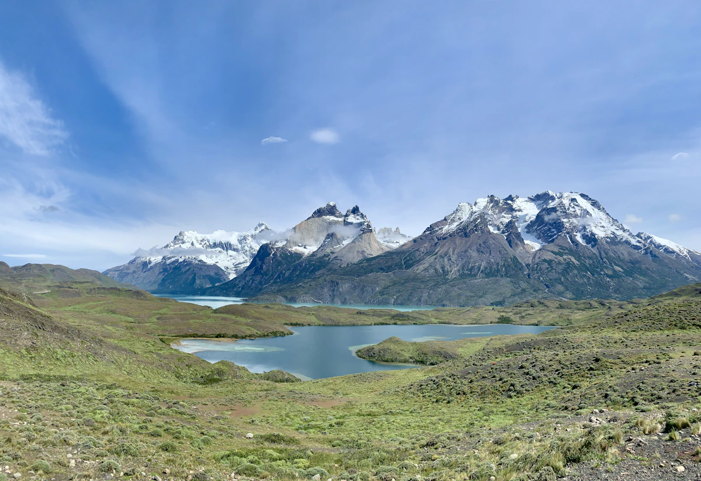
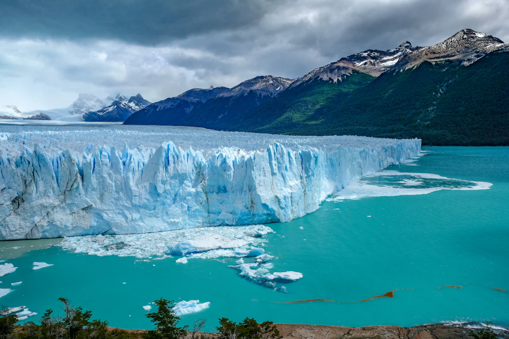
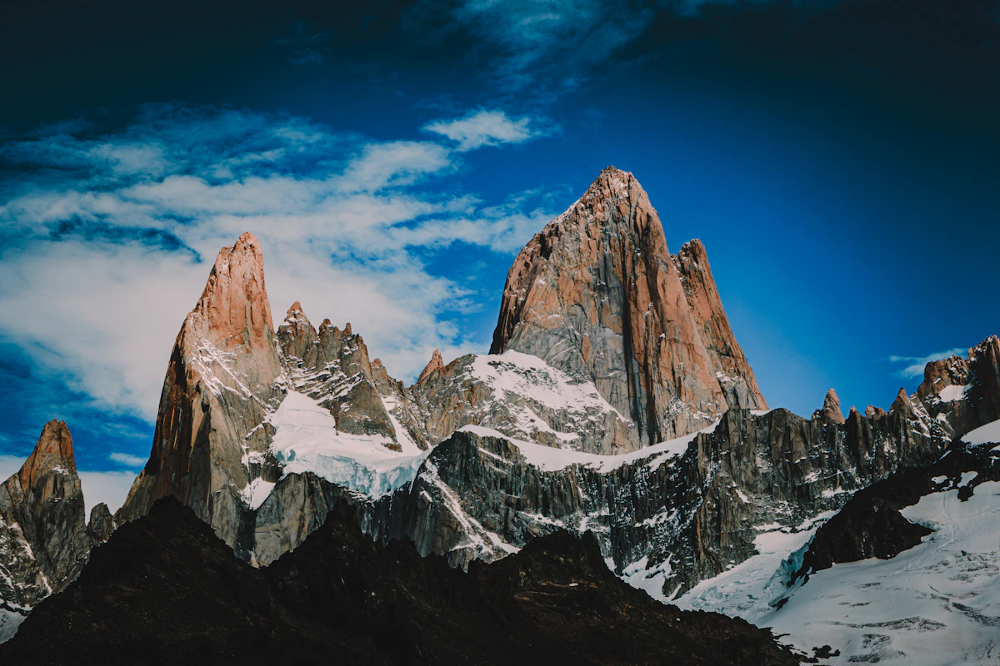

Montanhas e geleiras
Torres de granito, vales glaciais e grandes áreas de gelo tornam a paisagem visualmente marcante.
Sul da América Fim do mundo
Onde os Andes encontram o oceano e o vento esculpe a pedra há milênios.
Explore o territórioArgentina · Chile · 40°–55° S
O território
A Patagônia se estende por uma grande área entre Argentina e Chile, reunindo geleiras, pampas, lagos e montanhas de granito. É um território marcado por paisagens abertas e clima rigoroso.
Para este projeto acadêmico, a Patagônia foi escolhida como ponto turístico por reunir natureza, aventura, trilhas e cenários de forte impacto visual.
km² apresentados
parques apresentados
km de costa apresentados
temperatura apresentada
Por que conhecer?
Torres de granito, vales glaciais e grandes áreas de gelo tornam a paisagem visualmente marcante.
Trilhas, caminhadas sobre o gelo e navegação permitem conhecer a região de diferentes perspectivas.
A presença de áreas preservadas faz da região uma opção para quem busca natureza e tranquilidade.
Planejamento
A Patagônia ocupa uma área extensa entre Argentina e Chile. Por isso, a cidade-base depende da região que você deseja conhecer.

Torres del Paine
Chile · Patagônia austral

Perito Moreno
Argentina · Los Glaciares

Fitz Roy
Argentina · El Chaltén
Expedições
Cada rota, uma conversa com o território.
Um dos roteiros mais conhecidos da Patagônia chilena, passando por vales, mirantes e montanhas de granito.
Ideal para quem busca uma experiência de trekking com forte contato com a paisagem.
Experiência de caminhada sobre o glaciar com equipamentos apropriados e acompanhamento especializado.
Percurso de El Chaltén com subida exigente até a laguna aos pés do Fitz Roy.
Navegação pelos canais austrais, com possibilidade de observar fauna e paisagens do extremo sul.
Visuais
“A Patagônia não se oferece. Ela espera. E quem chega com pressa não a encontra.”
Um território entre Argentina e Chile
Planejar uma viagem
Use o formulário para simular um contato e indicar qual experiência mais chamou sua atenção.